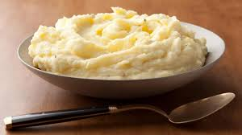

Mashed Potatoes

Ingredients
- 2 whole russet potatoes
- 1 tsp salt
- Seasonings
- Milk
- Butter
Steps
- Boil salted water on high heat
- Add potatoes to water, let boil for 15 minutes
- In a separate pan, heat butter and milk until they mix
- remove potatoes from water, drain pot
- Replace the potatoes in the pot, adding milk/butter mixture.
- Over low heat, mash the potatoes with a masher until desired texture is reached
- Remove from pot, cool, and serve
Home